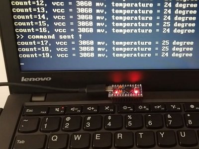
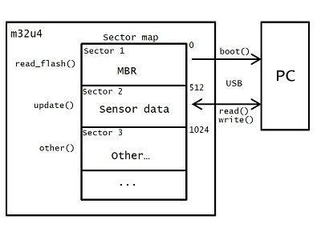

The communication between an arduino and a PC is fairly straight forward. It is usually done through a usb to serial adapter. In this experiment we can take a look at another way to communicate between these two. In short words, the arduino presents itself as a usb hard drive. With a bootable disk image as payload, the PC is able to boot from the hard drive. Then the AVR side can update the hard drive contents so that the program loaded in PC can read desired values (e.g. sensor data).
The other day I was playing around with the mass-storage-device library in LUFA. To emulate usable removable usb drive on AVR, an external storage is usually required (Dataflash, SD card ...). However, it is still possible to emulate small sized drive with the LUFA without extra storage. I had the idea whether the drive could be made bootable to a PC. Because to make a drive bootable, only the MBR is needed. A few days later I made it work. The work is devided into two sections: the disk image payload creation and the mass storage access handle on AVR.
A demo is on youtube: [LINK Here], image below shows the running system from the pro micro.

running image
1, craft the bootable disk image: boot.bin
After some research, some important details are made clear. The minimal readable/writable unit of a hard drive is a sector. For old hard drives, the sector size is 512 bytes, now for most drives, the sector size has incresed to 4KB. To maintain compability, the 512 byte access method is still used. To make a bootable disk image, the first sector (512 bytes) must ends with 0x55AA. When PC starts, the entire(and only) first sector is loaded into PC memory and start execution. If the program in sector 1 exceeds 512 bytes in size, it can be put on later sectors, then loaded by a loader program on sector 1.
To simplify things, I make the program fit in the first sector. The program calls standard BIOS services to display text, access hard drive and check for keyboard inputs.
The following describe the process on the PC side:
BIOS read sector 1 into PC ram
execute program from sector 1
the program read sector 2 into PC ram
print out contents from sector 2 on the screen
check for keyboard input
if the 'l' key is pressed, send a write request to sector 2
continue to step 3
The program is compiled using NASM, link here [LINK Here] under boot. After compilaton, convert the 1KB binary to C header file and replace the boot_bin[1024] array in msd_boot/Lib/RAMflash.c.
2, mass storage access handle: msd_boot
Altough the USB mass storage emulation on the AVR side is complex, but What it does is very simple: presenting the 1024-bytes payload to the PC side as two sectors. The 1st sector stores the MBR loader, the 2nd sector contains the sensor data etc. Whenever the PC sides requests to read/write the second sector, it returns with the updated sensor data, in this test, the voltage level acc, on-die temperature sensor reading as well as a counter are provided. In short, sector 2 can be seen as a register of the sensors to PC.
The following describe the process on the AVR side:
load disk image payload (2 sectors, 1KB) into AVR ram
wait for PC disk access requests
if the request is read disk, update the sector 2 with sensor values and return data
if the request is write disk, toggle the onboard led
The code is experimented on atmega32U4, it has 2.5KB RAM, enough to store 2 sectors (1KB). Both sector 1 and 2 are readable and writable. However, if the sectors are not required to save each write (write requests are treated as commands, not saved on sectors), without buffering, the RAM requirement can be further reduced (< 512 byte), so that it can be even ported to m8u2.
The experiment code msd_boot is here [LINK Here] under msd_boot.
The image below summarizes the overall system. The 1st and 2nd sectors are the crafted mayload that stored in AVR flash. To boot the computer, select the LUFA RAM Disk in the BIOS. It is first loaded into the 1KB RAM. The PC reads the 1st sector and execute the program to read the 2nd sector. Then the m32u4 update sector 2 with sensor data and return. Sector 3 is for other application and not implemented yet. When the PC detects 'l' key pressed, it sends a write request to sector 2, the m32u4 then toggles the onboard led. Please note the function names in the image are pseudo names.

overview
This experiment is inspired by the mass storage device class bootloader from Dean Camera. Usually the flash memory in the AVR is only self-modifiable in bootloader mode. I modified the original bootloader program to force the AVR to stay in bootloader all the time. Then the 32KB flash can be devided into 24KB usable space and 8KB bootloader section.
To my surprise, the 24KB is even enough for FAT12, after format, the drive has 15.5KB usable space. I then loaded the drive with a standard MBR and used it to successfully boot the computer.The datasheet says that the AVR internal flash has a write cycle of 10000, it may be not enough for normal use, but it surely seems OK for experiments in my view. To increase the capacity, external storage like dataflash, eeprom or sd card can be used.
The code msd_internal is here [LINK Here] under msd_internal.